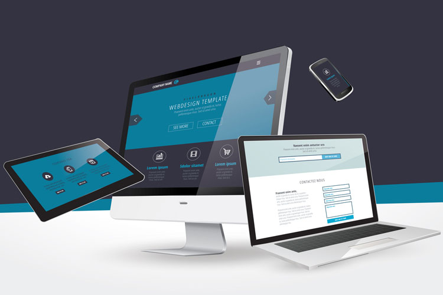
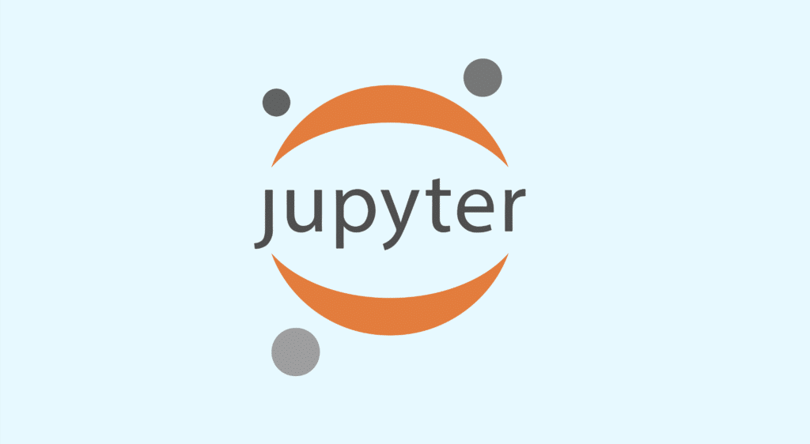
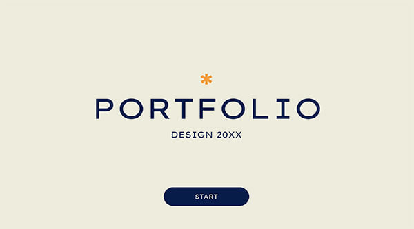

Configuration réseau sécurisé (SAE21)
Configuration VLAN, routage, sécurité réseau.

Développement outils web pour prise de photos (SAE 15 & 23)
Création d’un site dynamique avec PHP et MySQL.
Initiation WEB (R109)
Creation d'un site Web pour commencer a manier les outils html et css.
Mesures et caracterisation d'un signal (SAE 22)
Creation, modification des signaux et affichage sur jupyter notebook.
Creation d'un portfolio (SAE 25)
Mise en place d’un site web pour se presenter sous un angle informatique
Initiation aux reseaux informatique (SAE 12)
Decouverte et mise en oeuvre d'un premier reseau informatique en dehors des TP.